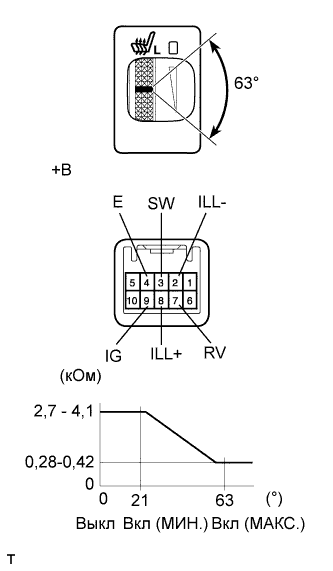
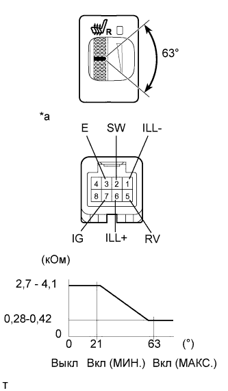

ПЕРЕКЛЮЧАТЕЛЬ ПОДОГРЕВАТЕЛЯ СИДЕНЬЯ > ПРОВЕРКА |
| 1. ПРОВЕРЬТЕ ПЕРЕКЛЮЧАТЕЛЬ ПОДОГРЕВАТЕЛЯ ЛЕВОГО СИДЕНЬЯ |
|  |
Измерьте сопротивление в соответствии со значениями, приведенными в таблице ниже.
| Контакты для подключения диагностического прибора | Положение переключателя | Заданные условия |
| 3 (SW) - 7 (RV) | Переключатель в выключенном положении | 2,7 - 4,1 кОм |
| Переключатель включен (мин.) | ||
| Переключатель включен (макс.) | 0,28 - 0,42 кОм |
| *a | Устройство с неподсоединенным жгутом проводов (выключатель подогревателя сиденья) |
Подайте напряжение аккумуляторной батареи на разъем переключателя подогревателя сиденья и проверьте, включилась ли подсветка переключателя.
| Условия измерений | Заданные условия |
| Положительный (+) вывод аккумуляторной батареи → 8 (ILL+) Отрицательный (-) вывод аккумуляторной батареи → 2 (ILL-) | Горит |
Подайте напряжение аккумуляторной батареи на разъем переключателя подогревателя сиденья и проверьте, включилась ли подсветка переключателя.
| Условия измерений | Положение переключателя | Заданные условия |
| Положительный (+) вывод аккумуляторной батареи → контакт 9 (IG) Отрицательный (-) вывод аккумуляторной батареи → 4 (E) | Переключатель во включенном положении | Контрольная лампа горит |
| 2. ПРОВЕРЬТЕ ПЕРЕКЛЮЧАТЕЛЬ ПОДОГРЕВАТЕЛЯ ПРАВОГО СИДЕНЬЯ |
|  |
Измерьте сопротивление в соответствии со значениями, приведенными в таблице ниже.
| Контакты для подключения диагностического прибора | Положение переключателя | Заданные условия |
| 2 (SW) - 5 (RV) | Переключатель в выключенном положении | 2,7 - 4,1 кОм |
| Переключатель включен (мин.) | ||
| Переключатель включен (макс.) | 0,28 - 0,42 кОм |
| *a | Устройство с неподсоединенным жгутом проводов (выключатель подогревателя сиденья) |
Подайте напряжение аккумуляторной батареи на разъем переключателя подогревателя сиденья и проверьте, включилась ли подсветка переключателя.
| Условия измерений | Заданные условия |
| Положительный (+) вывод аккумуляторной батареи → 6 (ILL+) Отрицательный (-) вывод аккумуляторной батареи → 1 (ILL-) | Горит |
Подайте напряжение аккумуляторной батареи на разъем переключателя подогревателя сиденья и проверьте, включилась ли подсветка переключателя.
| Условия измерений | Положение переключателя | Заданные условия |
| Положительный (+) вывод аккумуляторной батареи → контакт 7 (IG) Отрицательный (-) вывод аккумуляторной батареи → 3 (E) | Переключатель во включенном положении | Контрольная лампа горит |